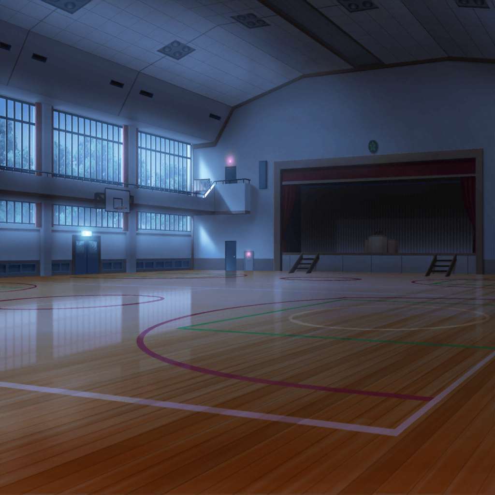

羽丘女子学園 廊下
モカ
も〜、みんな、バラバラに行動したらダメだってばー
ひまり・巴・蘭・つぐみ
ごめんなさい……
モカ
まったくも〜。あぶないじゃん〜
ひまり
モカに怒られるなんて……
つぐみ
申し訳ありません……
巴
まあ、無事に合流できてよかった！ ってことで……
そ、それじゃあ改めて、体育館に向かおうか……！
ひまり
そ、そうだね！
つぐみ
ねえ、モカちゃん……
さっきあった事だけど……
モカ
蘭達にはナイショにしとこ。
またパニクってどっか飛び出して行っちゃうかもしれないし
つぐみ
う、うん……そうしよう

羽丘女子学園 体育館
ひまり
やっとついたあ……！
蘭
これで外に出られる……んだよね？
巴
ああ、そのはずだ。
確か、いつも開いてる非常口は……

つぐみ
きゃっ！？ 明かりが……っ！
ひまり
ど、どうなってるの！？
つぐみ
か、懐中電灯が壊れちゃったみたい……！
蘭
嘘でしょ……なんでこのタイミングで……
巴
これじゃ非常口の場所もわからないよ……
つぐみ
どうしよう……せっかくここまで来れたのに
ひまり
……私、もう無理かも……ううっ、泣きそう……
モカ
ひーちゃん、泣かないで〜。大丈夫だよ。よしよし
蘭
ちょ、モカ、これあたしだから！
モカ
あれ？ ごめん
蘭
つぐみ、生徒会って体育館の清掃はしないの？
暗くてもある程度間取りがわかるとかそういうのは……
つぐみ
体育館はいつも運動部の人たちが清掃する決まりだから……
モカ
……詰んだ〜
ひまり
うっ……みんな……私のせいで、ごめんね……
巴
ちょ、急に何言い出すんだよ！
蘭
これが最後みたいのやめてよ！
ひまり
だ、だって……懐中電灯も壊れちゃったし、
出口はわからないし……うっうっ……
蘭
……風が吹いてる……てことは、開いてる窓かドアが
あるってことじゃない！？ 行ってみよう！
巴
蘭、天才かよ……
つぐみ
風が吹いてきたのは、あっちのほうだよね？
行こう！
ひまり
あ、あっちってどっち！？
つぐみ
こっち！ みんな、私につかまってついてきてっ
つぐみ
風が吹いてきたのは、こっちだったと思うんだけど……
？？？
こっちこっち〜！ こっちだよ〜！
つぐみ
……？ こっち？
モカ
わあ、つぐ、急に動かないでよ〜
巴
あれ、明かりが……
蘭
急になおったね。接触が悪かったのかな……
ひまり
あ！ ねえ、非常口ってこれじゃない？
つぐみ
ホントだ……！
ひまりちゃん、教えてくれてありがとうっ！
巴
もう、こんなとこ早く出よう！
……あれ？
蘭
え、もしかして、鍵……
巴
外側からかけられてるな。こっちからじゃ開かない……
モカ
詰んだ〜〜さすがにもうダメだ〜〜
ひまり
と、巴……どうしよう？
巴
……蹴ったら開いたりしないかな
蘭
ちょ、ダメだって！
つぐみ
すみませ〜ん！ 誰かいませんかーっ！
開けてくださーい！！！
巴
誰かー！ 助けてくれー！！
ひまり
あ、開いた！？
警備員さんがきてくれたのかな？
巴
助かったあ……
つぐみ
すみません、開けていただいて……ありがとうございます！
モカ
外……だれも、いないよ？
つぐみ
じゃあ……誰が開けてくれたの？
蘭
ホントにもう、勘弁してよ……っ！
モカ
……思い出した。
七不思議の７つめ
ひまり
……え？
モカ
夜な夜な、生徒の幽霊がウロついてるんだって。
遊び相手を探して、いろんないたずらをしてくるっていう……
つぐみ
きゃっ！ 風が……
ひまり
今、誰かが通り過ぎたような感じしなかった……？
一同
……
一同
うわああーーーーっ！！！！